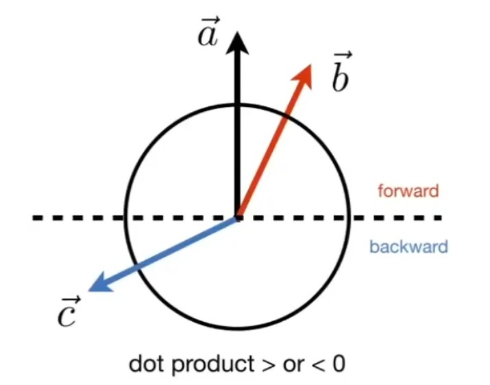
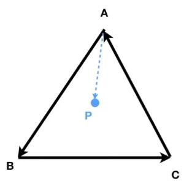

向量
全篇以2D为例，但对高维同样适用。
向量性质 [07：54]

-
方向: \( B - A \) 或 \( \vec{a} \)
-
长度：\( ||B-A || \) 或 \( ||\vec{a}|| \) (与起点无关)
-
单位向量：\( \vec{a}=\frac{\vec{a}}{||\vec{a}||} \)，模长为1，通常用于表示方向
向量一般默认为列向量，所以书写公式时，一个向量写为 \(\vec{a}=\left( x, y \right) ^T\)，其长度为\(||\vec{a}|| = \sqrt{x^2 + y^2}\)
向量加法
代数意义
$$ \vec{a}=\left( x_1, y_1 \right) ^T , \vec{b}=\left( x_2, y_2 \right) ^T $$
$$ \vec{a}+\vec{b}=\left( x_1+x_2, y_1+y_2 \right) ^T $$
几何意义

向量点乘
几何意义

$$ \vec{a}\cdot \vec{b}=||\vec{a}||\cdot ||\vec{b}||\cdot \cos <\vec{a}, \vec{b}> $$
向量点乘的结果是标量
📌补充： 由 \( \vec{a} \) 到 \( \vec{b} \) 的夹角 \( <\vec{a},\vec{b}> \) 是 \( \theta \) , 如果是由 \( \vec{b} \) 到 \( \vec{a} \) 的夹角 \( <\vec{b}, \vec{a}> \) , 则为 \( -\theta \) 。由于cos是关于x轴对称的，因此\(a \dot b = b \dot a\)
代数意义
$$ \vec{a}=\left( x_1, y_1 \right) ^T , \vec{b}=\left( x_2, y_2 \right) ^T $$
$$ \vec{a}\cdot \vec{b}=x_1x_2+y_1y_2 $$
性质
-
交换律：\( \vec{a}\cdot \vec{b}=\vec{b}\cdot \vec{a} \)
-
分配律： \( \vec{a}\cdot(\vec{b}+\vec{c})=\vec{a}\cdot \vec{b}+\vec{a}\cdot \vec{c} \)
-
结合律： \( (k\cdot \vec{a})\cdot \vec{b}=\vec{a}\cdot (k\cdot \vec{b})=k\cdot(\vec{a}\cdot \vec{b}) \)
作用
-
计算两个向量之间的夹角
\( \cos \theta =\frac{\vec{a}\cdot \vec{b}}{||\vec{a}||\cdot ||\vec{b}||} \)
当a和b都是单位向量时，可简化为：
$$ \cos \theta = \vec{a}\cdot \vec{b} $$
-
计算一个向量投影在另一个向量上的投影

b在a的投影为\(\vec{b}_{\bot}\)，其长度为：
$$ length=||\vec{b}||\cos \theta =||\vec{b}||\frac{\vec{a}\cdot \vec{b}}{||\vec{b}||\cdot ||\vec{a}||}=\frac{\vec{a}}{||\vec{a}||}\vec{b}=\hat{a}\cdot \vec{b} $$
其方向同a。
因此：
$$ \vec{b}_{\bot} = (\hat{a}\cdot \vec{b}) \hat a $$
-
把向量分解成垂直和平行的两个向量

-
计算两个向量有多接近
两个向量做点乘，可以反映二者方向的“接近”程度

表示方向是否相同 ： 我们假设 \( \vec{a} \) 已给定，如果一个向量的终点落在虚线上半部分，例如 \( \vec{b} \) ，则可以认为该向量在方向上与 \( \vec{a} \) 是相同的或是说都是向前的，此时\(\hat a \cdot \hat b > 0\)；如果一个向量，例如 \( \vec{c}\)，终点落在虚线下半部分，则可以认为 \( \vec{a} \) 和 \( \vec{c}\) 两个向量的方向基本是相反的，此时\(\hat a \cdot \hat b < 0\)
表示接近程度 ：点乘结果落在 \([-1, 1]\) 上，数值越大越接近，结果为1时方向相同。数值越小方向越远，为-1时方向正好相反。
📌补充：（点乘： \( \vec{a}\cdot \vec{b} > 0 \) ，方向相同； \( \vec{a}\cdot \vec{c} < 0 \) ，方向相反）
向量叉乘
几何意义
\( \vec{c}=\vec{a}\times \vec{b} \)
\(\vec{c}\) 是一个向量，方向同时与 \(\vec{a}\) 和 \(\vec{b}\) 垂直（右手法则），大小为 \(||\vec{a}||\cdot ||\vec{b}||\cdot \sin \theta \) (\(\theta\) 是a到b的夹角)
✅右手螺旋法则：
\(\vec{c}=\vec{a}\times \vec{b}\)
右手手指指向 \(\vec{a}\) 方向，然后沿着去往 \(\vec{b}\) 的方向握紧四指，此时大拇指指向的方向，就是 \(\vec{c}\) 的方向。
\(\sin \theta = -\sin(-\theta)\)，因此\(a\times b = b\times a\)
性质
[34：15]
- \( \vec{x}\times \vec{y}=+\vec{z} \)
- \( \vec{y}\times \vec{x}=-\vec{z} \)
- \( \vec{y}\times \vec{z}=+\vec{x} \)
- \( \vec{z}\times \vec{y}=-\vec{x} \)
- \( \vec{z}\times \vec{x}=+\vec{y} \)
- \( \vec{x}\times \vec{z}=-\vec{y} \)
- \( \vec{a}\times \vec{b}=-\vec{b}\times \vec{a} \) (不满足交换律)
- \( \vec{a}\times \vec{a}=\vec{0} \) （不是0，而是长度为0的向量）
- \( \vec{a}\times \left( \vec{b}+\vec{c} \right) =\vec{a}\times \vec{b}+\vec{a}\times \vec{c} \) （分配律）
- \( \vec{a}\times \left( k\vec{b} \right) =k\left( \vec{a}\times \vec{b} \right) \) （结合律）
左手则符号相反
📌 在一个三维坐标系中，如果\( \vec{x}\times \vec{y}=\vec{z}\)，那么这个坐标系称为右手坐标系。
代数意义
[36:11]
\[ \vec{a}\times \vec{b}=\left( \begin{array}{c} y_az_b-y_bz_a\\ z_ax_b-x_az_b\\ x_ay_b-y_ax_b \end{array} \right) = \left[ \begin{matrix} 0& -z_a& y_a\\ z_a& 0& -x_a\\ -y_a& x_a& 0\\ \end{matrix} \right] \left[ \begin{matrix} x_b\\ y_b\\ z_b\\ \end{matrix} \right] \]
💡思考： 这个式子中，\( x_a,y_a,z_a \) 是\( \vec{a}\) 在三维坐标系中的三个坐标分量的代数表示。 叉乘只用于3D中，在2D中没有定义。
式子中的矩阵称为dual matrix of a，常写作\(A^*\)
❗ 在本课程中默认使用右手坐标系，OPENGL, UE, unity等api默认使用左手坐标系。
在图形学中的作用
-
判定左和右
📌左右： 目标向量逆时针旋转指向的区域，是目标向量的左侧，反之是右侧。

如果\( \vec{a}\times \vec{b} \) 的结果是正值，即与 \(Z\) 轴方向相同，就表示 \(\vec{b}\) 在 \(\vec{a}\) 的左侧。
❓ 叉乘的结果是一个向量，向量没有正负属性，什么叫结果是正的？
答：这里假设a和b都是xy平面上的向量，即
$$ a^\top = (x_a, y_a, 0) \\ b^\top = (x_b, y_b, 0) $$ \(c = a \times b\)，那么
$$ c^\top = (0, 0, z_c) $$ 在这种情况下，\(z_c > 0\)认为结果是正的，b在a的左侧。
离开了前面的假设，就不能用这种方法简单的判断了。
-
判断内和外

✅如何判断P点在A、B、C的内部？
\( AB\times AP \)，可以得到 \(AP\) 在 \(AB\) 的左侧。\( BC\times BP \)，可以得到 \(BP\) 在 \(BC\) 的左侧。\( CA\times CP \)，可以得到 \(CP\) 在 \(CA\) 的左侧。这样，就可以判断出P点在A、B、C的内部（P点在这三条边的同一侧）。
-
构建右手坐标系
有三个单位向量，两两垂直：
\(||\vec{u}||=||\vec{v}||=||\vec{w}||=1\)
\(\vec{u}\cdot \vec{v}=\vec{v}\cdot \vec{w}=\vec{u}\cdot \vec{w}=0\)
且 \(\vec{w}=\vec{u}\times \vec{v}\)
则这三个向量构成一个右手坐标系。
可以把任意一个向量分解到轴上去：
\(\vec{p}=\left( \vec{p}\cdot \vec{u} \right) \vec{u}+\left( \vec{p}\cdot \vec{v} \right) \vec{v}+\left( \vec{p}\cdot \vec{w} \right) \vec{w}\)
- \(\left( \vec{p}\cdot \vec{u} \right)\) 是投影长度
- \(\vec{u}\) 是方向
本文出自CaterpillarStudyGroup，转载请注明出处。
https://caterpillarstudygroup.github.io/GAMES101_mdbook/